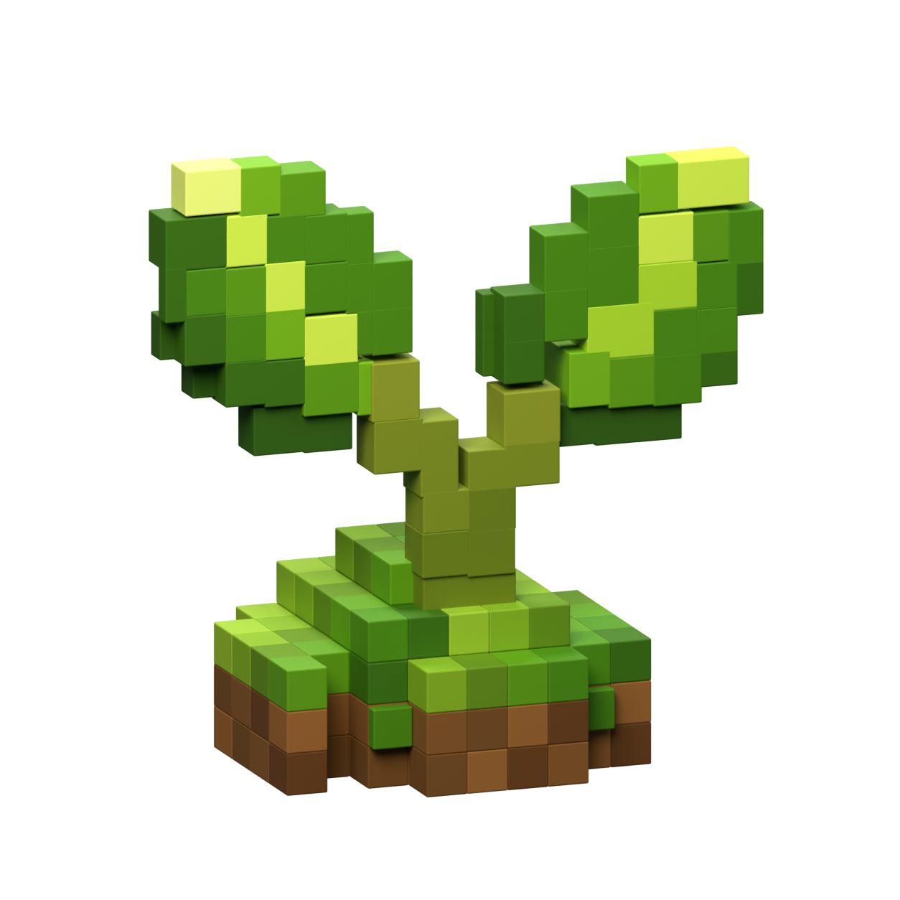
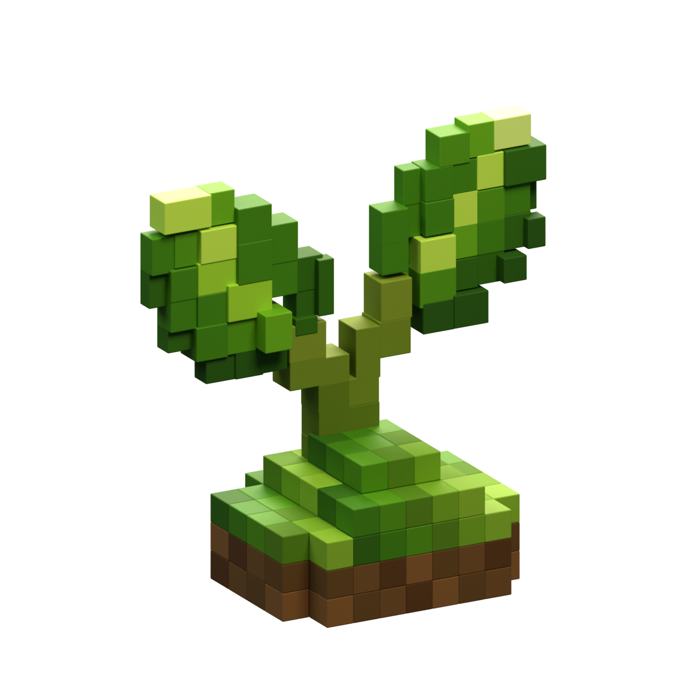

Editable physical Blender model: 243 closed parts, 26,244 triangles and three packed maps. The 25.9 cm model is seated on the market counter. The Unreal comparison uses the same camera and world lighting; the corrected maps restore sRGB decoding. The earlier capture folder is named UnlitDiagnostic, but the capture itself remained lit.


Remaining: leaf volume and edge profiles, irregular turf and soil silhouette, and shaded color matching. Rear geometry is inferred. Passing structural and color-sampling checks does not establish a perfect concept match.